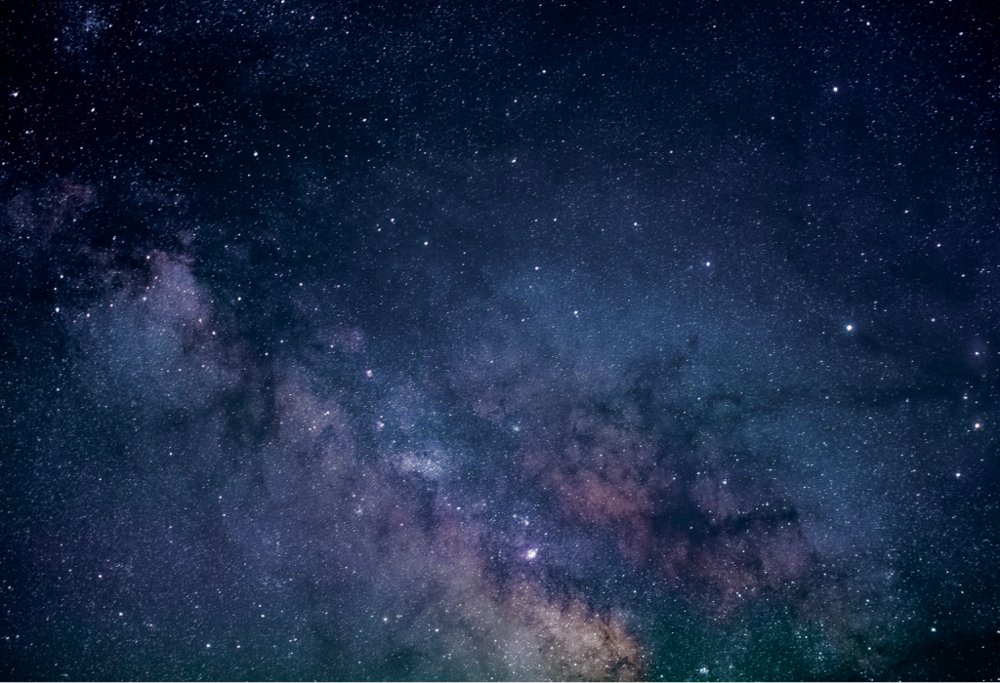

人工衛星や探査機に搭載する
次世代の観測装置を研究開発しています。
「宇宙環境物理・計測」を掲げ、
応用物理学とセンサー工学を基盤に、
メテオロイドや微小デブリ等の計測装置の
初期検討や概念設計、試作を行います。
宇宙開発の実践的理解に加え、
高度な計測技術の習得にも直結する、
理論と実機開発の架け橋を目指します。
お知らせお知らせお知らせお知らせお知らせお知らせお知らせお知らせお知らせお知らせお知らせお知らせお知らせお知らせお知らせお知らせお知らせお知らせお知らせお知らせお知らせお知らせお知らせお知らせ
コード直書きでお知らせを更新していくなら、↗️のアーカイブ表示は管理が大変なのでなくてもいい
お知らせお知らせお知らせお知らせお知らせお知らせお知らせお知らせお知らせお知らせお知らせお知らせ
お知らせお知らせお知らせお知らせお知らせお知らせお知らせお知らせお知らせお知らせお知らせお知らせ
軽めの挨拶文をここに入れてください。以下コピペ
主に、人工衛星のデータを使った惑星間の高速荷電粒子の現象解明やかぐやに搭載された月ガンマ線分光計の開発、運用、データ解析に携わってきました。PERCでは惑星探査機に搭載する科学機器の研究開発に取り組んでいます。これから参画していく惑星探査ミッションから得られる知見によって惑星科学の発展と人類平和に貢献できればうれしいです。